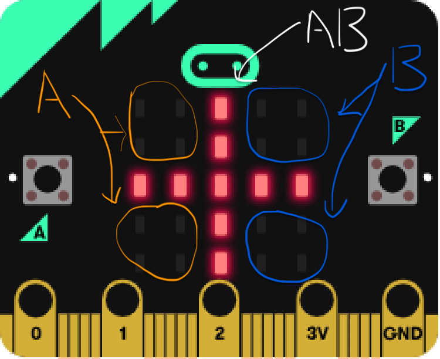
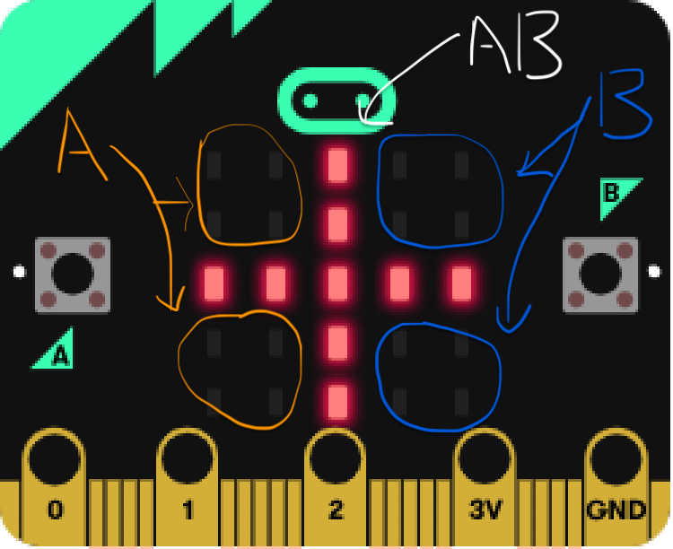

Project Documentation
Catch The Light (Game)
Before we delve into the workings of the "Catch The Light with Buttons" game and the process of building this project, if you'd like to familiarize yourself with the micro:bit board, you can start by learning the basics from the following link Micro:bit.
There are micro:bit simulators you can use online from Microsoft at Micro:bitMakeCode (JavaScript) or Micro:bitPython (Python). You can test your program on those simulators, depending on which language you choose to use.
 

In this game, players are presented with a 5x5 grid consisting of 25 LED lights representing different coordinates on the micro:bit board. The game begins with a countdown from 3 to 1, and players use Button A, Button B, and Button AB (press and hold both buttons A and B at the same time) as controllers. Button A controls the first two columns of the grid, excluding coordinates [2, 0] and [2, 1], while Button AB controls the middle column and the middle row. Button B, on the other hand, controls the last two columns, excluding coordinates [2, 3] and [2, 4]. Each round, only one LED light appears randomly on the grid at a time. Players earn one point and advance to the next round by correctly pressing the corresponding button for the lit LED. However, pressing the wrong button results in immediate game over, with no points earned. After the game concludes, the final score and time spent playing are displayed.
What are Coordinates?
In the context of the micro:bit board, coordinates refer to the specific positions or locations on the LED grid of the micro:bit. The micro:bit features a 5x5 grid of LEDs, resulting in a total of 25 individual LED lights. Each LED represents a coordinate within the grid. The coordinates on the micro:bit LED grid are represented by two numbers: an x-coordinate (horizontal) and a y-coordinate (vertical). The x-coordinate ranges from 0 to 4, representing the columns from left to right. The y-coordinate also ranges from 0 to 4, representing the rows from top to bottom. For example, the coordinate (0, 0) represents the top-left corner of the LED grid, and (4, 4) represents the bottom-right corner. By specifying the appropriate x and y coordinates, you can control and manipulate individual LEDs or groups of LEDs on the micro:bit board.
Game Break Down
- The game features a 5x5 grid with 25 LED lights representing coordinates.
- The game starts with a countdown from 3 to 1.
- Button A, Button B, and Button AB are used as controllers.
- Button A controls the first two columns (excluding coordinates [2, 0] and [2, 1]).
- Button AB controls the middle column and the middle row.
- Button B controls the last two columns (excluding coordinates [2, 3] and [2, 4]).
- Only ONE LED light appears randomly on the board at a time during each round.
- Correctly pressing the corresponding button earns one point and progresses to the next round.
- Pressing the wrong button results in no points and immediate game over.
- After the game ends, the final score and time spent are displayed.
Step By Step
Step 1
In Step 1, we need to figure out how to randomly light up just one LED at a time on the grid for each round. Since we know that each LED represents a coordinate in the grid, we can think of it as having an x-coordinate (horizontal) and a y-coordinate (vertical). The x-coordinate represents the column number, while the y-coordinate represents the row number.
So, how do we make it random? It's simple! We can use the magic of math by employing the trusty Math.randomRange() function. For example: Math.randomRange(0, 4), now we can get a random number between 0 and 4 for both the x and y coordinates.
Once we have these random coordinates, we can create a nifty little function that takes them as inputs and lights up the corresponding LED on the grid.
Now, every time we call this function, a random LED will light up on the grid, adding that extra element of surprise and variability to the game.
Step 2
In Step 2, let's talk about the variable called 'isRoundOver'. This variable is very important because it helps us figure out if the current round is over or not. Basically, it holds a boolean value, which means it can be either true or false.
At the beginning of each round, we set 'isRoundOver' to false. This means the round is still in progress, and the players haven't lost yet. If the players successfully complete the round, we keep 'isRoundOver' as false because the round is still ongoing.
But here's the twist: if the players lose the round, we set 'isRoundOver' to true. This tells us that the round is over and they didn't make it. However, after the game ends, we reset 'isRoundOver' back to false. Why? Well, that's because we want to start a new game right away without any delay.
With the help of the 'isRoundOver' variable, we can easily keep track of the round's status and make sure everything runs smoothly.
Step 3
In Step 3, let's talk about how we keep track of the score in this game. The rule is straightforward: if the players win a round, they earn one point. It's one point per round, simple as that!
To implement this, we start by declaring a variable called 'score' at the beginning of the game and initialize it to 0. This variable will hold the player's score throughout the game.
Whenever the player wins a round, we increase their score by one. How do we do it? Well, there are a couple of ways. We can use the expression 'score = score + 1', which adds one to the current score. Alternatively, we can use the shorthand form 'score += 1', which does the same thing.
On the other hand, if the player loses a round, no points are awarded, and they lose the game right away. So, it's important for them to aim for victory in each round to boost their score.
By keeping track of the score, we can add an element of competition and motivate the players to strive for success in the game.
Step 4
In Step 4, let's dive into tracking the time spent by the player while playing the game. Before we use our game as an example, let's understand the concept of an in-built function called 'input.runningTime()'.
This function gives us the number of milliseconds that have passed since the micro:bit was powered on or restarted. It allows us to measure time during the execution of our code. For instance, by recording the current time before and after a specific operation or event, we can calculate the time difference using 'input.runningTime()'.
Now, let's apply this concept to our game example. Firstly, we declare a variable called 'startTime' and set it to 0. Keep in mind that our game begins with a 3-second countdown. After that, we capture the time that has already passed before the game starts using 'startTime = input.runningTime()'.
During the game, if the player loses, we immediately declare another variable called 'elapsedTime' to calculate the time difference. Using the formula 'elapsedTime = input.runningTime() - startTime', we obtain the current total time spent on the micro:bit, subtracting the time spent before the game started. This provides us with the actual game time that the player has spent from the start to the end of the game.
This is how we determine the time the player has spent playing the game. Additionally, we display the score through LEDs once the game has finished, giving the player a visual representation of their performance.
By incorporating time tracking into our game, we can provide an engaging and time-bound challenge for the players, enhancing the overall experience.
Step 5
In Step 5, let's dive into the code and focus on how the player can win a round. As we already know, winning a round requires the player to press the corresponding button for the lit LED. Each button has control over specific columns and rows on the grid: Button A controls the first two columns (excluding coordinates [2, 0] and [2, 1]), Button AB controls the middle column and middle row, and Button B controls the last two columns (excluding coordinates [2, 3] and [2, 4]).
To check the state of the LED light, we need to understand a few functions: 'led.point' and 'led.plot'. The 'led.point' function determines the state of the LED, whether it's 'on' or 'off', without actually lighting it up. It returns a boolean value indicating the LED's state. On the other hand, the 'led.plot' function is responsible for lighting up the LED on the grid and can also change its state from 'on' to 'off' or vice versa.
Since the game involves the player pressing the correct button to win the round, we need to check if the light at a specific coordinate is 'on' or 'off'. This check helps us determine if the player clicked the correct button. The figure on the right illustrates the check condition function, which returns true if the light is 'on' and false if it's 'off'.
In the figure on the left, we see that if the player presses the correct button, we add one point to the score. Since the round is not over yet, we set the 'isRoundOver' variable to false. Finally, we move on to the next round and continue the game.
But what happens if the player loses the game? Don't worry, we'll address this in the following steps. You're making great progress! Keep it up!
Step 6
In Step 6, let's explore what happens when the player loses the game. As depicted in the figure above, we immediately declare and initialize the 'elapsedTime' variable to keep track of the time the player spent playing the game. Then, we set the 'isRoundOver' variable to true, indicating that the round is over because the player lost.
To provide a sense of closure, we display the final score using the 'basic.showString()' and 'basic.showNumber()' functions. Afterward, we divide the 'elapsedTime' by 1000 because the micro:bit board measures time in milliseconds, but we want to present it in seconds. To achieve this, we convert the total game time, represented as a number, into a String using the 'toString()' function. Subsequently, we display the total game time to the player and restart the game.
Displaying the final score and game time adds a competitive element to the game, motivating players to strive for the highest score and complete the game in the shortest time possible. This fosters engagement and encourages players to continue playing and improving their performance.
Step 7
In Step 7, it's crucial to remember to reset everything after the player loses the game. Failure to do so would prevent us from continuing to play and could lead to using the score and game time from the previous game.
To ensure a fresh start, it's important to reset all variables and related elements. This includes using the 'basic.clearScreen()' function to clear the LED matrix, resetting the 'score' and 'startTime' variables back to 0, and setting 'isRoundOver' to false. By resetting everything, we can prepare the game for a new session.
By following this practice and resetting everything before starting a new game, we maintain a clean slate and avoid any interference or carryover from previous game sessions. This allows for a fair and consistent gameplay experience.
Step 8
In Step 8, let's focus on creating a countdown animation for the game. The game begins with a countdown from 3 to 1, which enhances the user experience and adds interactivity to the game.
To achieve this, we can create a function that includes a for loop. Within the loop, we display the countdown numbers and introduce a delay of 0.5 seconds using the 'basic.pause()' function. As illustrated in the figure above, the pause duration is set to 500 milliseconds, equivalent to 0.5 seconds. This allows for a brief pause before moving on to the next iteration. By utilizing a for loop, we can iterate through the process three times, making the code more efficient and executing the countdown animation faster.
To incorporate the countdown animation, we call this function before the game starts, setting the stage for an engaging and dynamic game experience.
Step 9
In Step 9, let's introduce more animation to our game. This animation involves a flashing crossline made up of LED lights, which appears after the countdown at the start of the game and before the actual gameplay begins.
To achieve this, we utilize the 'basic.showLeds()' function, which allows us to draw custom shapes on the LED matrix. In this case, we draw a crossline to highlight the middle column and middle row of the game. The crossline is created using a combination of dots (representing the LED lights turned off) and hashtags (representing the LED lights turned on). It's important to ensure that the drawing is done on a 5x5 grid, as deviating from this grid size may cause issues with the code.
As depicted in the figure above, the first drawing is left empty, the second drawing represents the crossline, and the final drawing is empty again. The reason for having an empty drawing at the end is to clear the LED matrix before the game starts. Otherwise, the crossline would remain on the screen indefinitely.
Furthermore, it's crucial to understand the order of function declarations and function calls. After declaring a function, it's necessary to call the function for it to work properly. The figure below demonstrates the sequence of three function calls, and it's important to follow this order correctly.
By adding this animation and adhering to the correct order of function calls, we enhance the visual appeal of the game and ensure the smooth execution of each animation sequence.
Final Step
In the final step, after completing all the aforementioned steps, you can refer to the provided source code below to compare it with your own code. This project offers a combination of challenges and enjoyment, making it an engaging endeavor. I hope you have enjoyed working on this project and have found it fulfilling.
If you're interested in delving deeper into micro:bit, I recommend visiting the provided link Micro:bit Educational Foundation. The website offers a wealth of learning materials, resources, including videos, documentation, and projects that can further enhance your technical skills. It's a valuable platform to explore and expand your knowledge in the realm of micro:bit.
Additional Features Suggestion
- Add Timer for each round (only 3 seconds)
- Add Diagonal Lines as Button AB column
- Make the LEDs light only appears for 1 second and then flash out, players need to guess where it is